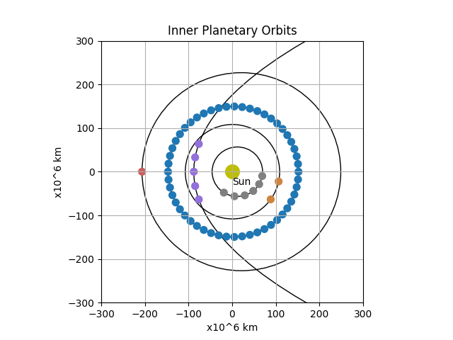

Note
Click here to download the full example code
Drawing a planet orbit (customised)
The Wikipedia article describes a method step by step how to calculate the position (in heliocentric polar coordinates) as a function of time. The equations contain Newton’s gravitational constant and the mass of the Sun. Some of them are only solveable by numeric methods.

Out:
{'Name': 'Mercury', 'Color': 'grey', 'Aphelion (10^6 km)': 69.8, 'Perihelion (10^6 km)': 46.0, 'Orbital Period (days)': 88, 'Diameter (km)': 4879}
{'Name': 'Venus', 'Color': 'peru', 'Aphelion (10^6 km)': 108.9, 'Perihelion (10^6 km)': 107.5, 'Orbital Period (days)': 224.7, 'Diameter (km)': 12104}
{'Name': 'Earth', 'Color': 'tab:blue', 'Aphelion (10^6 km)': 152.1, 'Perihelion (10^6 km)': 147.1, 'Orbital Period (days)': 365.25, 'Diameter (km)': 12756}
{'Name': 'Mars', 'Color': 'indianred', 'Aphelion (10^6 km)': 249.1, 'Perihelion (10^6 km)': 206.7, 'Orbital Period (days)': 687, 'Diameter (km)': 6792}
{'Name': 'Halley', 'Color': 'mediumpurple', 'Aphelion (10^6 km)': 45900, 'Perihelion (10^6 km)': 88, 'Orbital Period (days)': 246909.0, 'Diameter (km)': 11}
18 # Libraries
19 import math
20 import pandas as pd
21 import matplotlib.pyplot as plt
22
23 from matplotlib.patches import Ellipse
24 from matplotlib.patches import Circle
25
26
27 EPSILON = 1e-12
28
29
30 # Implementing ellipse equations to generate the values needed to plot an ellipse
31 # Using only the planet's min (m) and max (M) distances from the sun
32 # Equations return '2a' (the ellipses width) and '2b' (the ellipses height)
33 def orbit_length(M, m):
34 a = (M + m) / 2
35 c = a - m
36 e = c / a
37 b = a * (1 - e ** 2) ** 0.5
38 return 2 * a, 2 * b
39
40 def solve_bisection(fn, xmin, xmax, epsilon=EPSILON):
41 while True:
42 xmid = (xmin + xmax) * 0.5
43 if (xmax - xmin < epsilon):
44 return xmid
45 fn_mid = fn(xmid)
46 fn_min = fn(xmin)
47 if fn_min * fn_mid < 0:
48 xmax = xmid
49 else:
50 xmin = xmid
51
52 def get_planet_coordinates(rmax, rmin, t):
53 """Get the planet cartesian coordinates.
54
55 :param rmax:
56 :param rmin:
57 :param t:
58 :return:
59 """
60 SCALE = 1e9
61 theta, r = get_planet_solve_orbit(rmax * SCALE, rmin * SCALE, t)
62 x = -r * math.cos(theta) / SCALE
63 y = r * math.sin(theta) / SCALE
64 return x, y
65
66 def get_planet_solve_orbit(rmax, rmin, t):
67 """Get the planet orbit parameters
68
69 .. note:: Polar coordinates.
70
71 :param rmax:
72 :param rmin:
73 :param t:
74 :return:
75 """
76 # calculation precision
77 epsilon = EPSILON
78 # mass of the sun [kg]
79 Msun = 1.9891e30
80 # Newton's gravitational constant [N*m**2/kg**2]
81 G = 6.6740831e-11
82 # standard gravitational parameter
83 mu = G * Msun
84 # eccentricity
85 eps = (rmax - rmin) / (rmax + rmin)
86 # semi-latus rectum
87 p = rmin * (1 + eps)
88 # semi/half major axis
89 a = p / (1 - eps ** 2)
90 # period
91 P = math.sqrt(a ** 3 / mu)
92 # mean anomaly
93 M = (t / P) % (2 * math.pi)
94
95 # eccentric anomaly
96 def fn_E(E):
97 return M - (E - eps * math.sin(E))
98
99 E = solve_bisection(fn_E, 0, 2 * math.pi)
100 # true anomaly
101 # TODO: what if E == pi?
102 theta = 2 * math.atan(math.sqrt((((1 + eps) * math.tan(E / 2) ** 2) / (1 - eps))))
103 # if we are at the second half of the orbit
104 if (E > math.pi):
105 theta = 2 * math.pi - theta
106 # heliocentric distance
107 r = a * (1 - eps * math.cos(E))
108 return theta, r
109
110 def get_planet_orbit(M, m):
111 """
112
113 :param M:
114 :param m:
115 :return:
116 """
117 w, h = orbit_length(M, m)
118 Xoffset = ((M + m) / 2) - m
119 return w, h, Xoffset
120
121 def plot_orbit(d, ax, **kwargs):
122 """Plot the orbit.
123
124 :param d:
125 :param kwargs:
126 :return:
127 """
128 # Dictionary
129 print(d)
130 M = d.get('Aphelion (10^6 km)')
131 m = d.get('Perihelion (10^6 km)')
132
133 # Create planet orbit (ellipse)
134 w, h, x_offset = get_planet_orbit(M, m)
135 orbit = Ellipse(xy=((x_offset), 0), width=w, height=h,
136 angle=0, linewidth=1, fill=False,
137 color='k')
138
139 # Draw
140 ax.add_artist(orbit)
141
142 def plot_planet(d, ax, start=0, stop=1, coeff=1, size=None):
143 """Plot the planet.
144
145 .. note: We could include sizes, but because the diameters
146 vary considerably, some of them might not be
147 visible and would need to be re-scaled.
148
149 Params
150 ------
151
152 """
153 M = d.get('Aphelion (10^6 km)')
154 m = d.get('Perihelion (10^6 km)')
155 #p = d.get('Orbital Period (days)')
156 #s = d.get('Diameter (km)') if size is None else size
157
158 for i in range(start, stop):
159 t = i * coeff * 60 * 60 * 24
160 x, y = get_planet_coordinates(M, m, t)
161 planet = Circle((x, y), 8, color=d.get('Color'))
162 ax.add_artist(planet)
163
164
165
166 # ---------------------------------------
167 # Main
168 # ---------------------------------------
169 # Information of the planets in a list format.
170 PLANETS = [
171 {
172 'Name': 'Mercury',
173 'Color': 'grey',
174 'Aphelion (10^6 km)': 69.8,
175 'Perihelion (10^6 km)': 46.0,
176 'Orbital Period (days)': 88,
177 'Diameter (km)': 4879
178 },
179 {
180 'Name': 'Venus',
181 'Color': 'peru',
182 'Aphelion (10^6 km)': 108.9,
183 'Perihelion (10^6 km)': 107.5,
184 'Orbital Period (days)': 224.7,
185 'Diameter (km)': 12104
186 },
187 {
188 'Name': 'Earth',
189 'Color': 'tab:blue',
190 'Aphelion (10^6 km)': 152.1,
191 'Perihelion (10^6 km)': 147.1,
192 'Orbital Period (days)': 365.25,
193 'Diameter (km)': 12756
194 },
195 {
196 'Name': 'Mars',
197 'Color': 'indianred',
198 'Aphelion (10^6 km)': 249.1,
199 'Perihelion (10^6 km)': 206.7,
200 'Orbital Period (days)': 687,
201 'Diameter (km)': 6792
202 },
203 {
204 'Name': 'Halley', # commet
205 'Color': 'mediumpurple',
206 'Aphelion (10^6 km)': 45900,
207 'Perihelion (10^6 km)': 88,
208 'Orbital Period (days)': 676 * 365.25,
209 'Diameter (km)': 11
210 }
211 ]
212
213 # Load planet information from .csv file
214 #PLANETS = pd.read_csv('./data/orbits.csv') \
215 # .to_dict(orient='records')
216
217 # Information of the planets in a dict format where
218 # the key is the name and the value is the full object.
219 PLANETS_DICT = { e.get('Name'): e for e in PLANETS }
220
221 # Create figure. Set axes aspect to equal as orbits are
222 # almost circular; hence square is needed
223 ax = plt.figure(1).add_subplot(111, aspect='equal')
224
225
226 # ---------------------------------------
227 # Draw orbits
228 # ---------------------------------------
229 # Drawing orbits
230 for n in PLANETS_DICT.keys():
231 plot_orbit(PLANETS_DICT.get(n), ax)
232
233
234 # ---------------------------------------
235 # Draw planets
236 # ---------------------------------------
237 #
238 # .. note:: The coefficient broadly indicates in how many portions
239 # to divide the orbit. Then you will plot one marker for
240 # each of the elements within start and stop.
241 #
242 # Plot planets at different t.
243 plot_planet(PLANETS_DICT.get('Mercury'), ax, start=8, stop=14, coeff=1/15*88)
244 plot_planet(PLANETS_DICT.get('Venus'), ax, start=8, stop=10, coeff=1/15*224.7)
245 plot_planet(PLANETS_DICT.get('Earth'), ax, start=0, stop=52, coeff=1/52*365.25)
246 plot_planet(PLANETS_DICT.get('Mars'), ax, start=0, stop=1, coeff=1/4*687)
247 plot_planet(PLANETS_DICT.get('Halley'), ax, start=-2, stop=3, coeff=7)
248
249 # Axis configuration
250 plt.title('Inner Planetary Orbits')
251 plt.ylabel('x10^6 km')
252 plt.xlabel('x10^6 km')
253 ax.set_xlim(-300, 300)
254 ax.set_ylim(-300, 300)
255 plt.grid()
256
257 # Creating the point to represent the sun at the origin (not to scale),
258 ax.scatter(0, 0, s=200, color='y')
259 plt.annotate('Sun', xy=(0, -30))
260
261 # Show
262 plt.show()
Total running time of the script: ( 0 minutes 0.135 seconds)